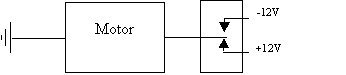

|
|
Tech Model Railroad Club Control System
System 3 Design - Switch Card
John E. McNamara
2/18/2004
When the Tech Model Railroad Club (TMRC) moved its layout from its former location in MIT's Building 20 to the new location in Building N52, the club brought along the relay-operated control system that had served the club for nearly 35 years. While reliable, this system (System 2) was physically large, not easily expandable, and lacked many desirable features that could easily be accomplished with an electronic system.
As a first step in developing a new electronic system (System 3), the club (principally John Purbrick) designed a circuit that would allow a computer to operate switches (turnouts) on the layout. James Knight and Alvar Saenz-Otero did the printed circuit board layout. To control cost and risk, it was decided that these cards would not contain microprocessors, but rather would respond to streams of bytes transmitted from a central interface message processor (IMP).
Card size was also chosen on the basis of cost and risk. Since many integrated circuits come with eight buffers or drivers in each package, and since track switches often occur in clusters, it was decided that the best card size was one that served eight switches. In addition, it was felt desirable to provide outputs on the card that could operate wayside signals via control information passed from a master computer through the IMP. For this purpose, the standard switch card includes eight general-purpose outputs in addition to the outputs used to operate track switches. Finally, it was envisioned that push buttons at the side of the layout might be used under some circumstances, so the standard switch card includes eight general-purpose inputs.
While this document emphasizes the design of a standard switch card, the switch card bus and protocol described can be used for other types of card.
All data transmitted to the switch cards originates in the IMP and is transmitted serially over a bus that connects all of the switch cards. One of the signals on the bus is a clock that latches each transmitted bit into the shift registers on all of the switch cards simultaneously. Thus, at any given moment, all of the shift registers contain the same information.
The bus conveys four signals, the first three of which are described in this section. Received Data is described in 4. Receiving Data from the Switch Cards.
In the figure, the IMP is sending a three-byte message, ABC[1], onto the switch card bus. The bytes are being transmitted serially (a bit at a time) over the transmit data lead. The clock signal is clocking the data into the shift registers within each of the three switch cards shown. The TMRC standard switch cards have three 8-bit shift registers that are concatenated to form a 24-bit shift register. However, as shown in the figure, the size of the shift registers on each card need not be the same. If a shift register is longer than the bit stream, some portion is unused. If the shift register is shorter than the bit stream sent, the initial bits sent are lost. (At startup, the IMP is given configuration information that tells it how many bytes can be sent to each card.) For simplicity, the figures that follow describe only the case of three-byte messages and three-byte shift registers.
Each of the shift registers shown is a double-buffered shift register (74HC595) having an eight-bit shift register section and an eight-bit “output register” section into which the bits can be loaded (in parallel) when shifting has ceased. When the IMP has finished sending the last byte of a message, it issues a Strobe signal that performs the parallel load of the output registers. However, in each switch card, byte C is the only register connected to the Strobe line. Thus, the Strobe signal issued by the IMP only performs a parallel load for the last byte received. Once loaded, the eight bits of byte C, now on the output pins of the 74HC595 chip, are compared to the card address that is specified by DIP switches on the card. A 74HC688 8-bit comparator chip performs this operation. If the last byte received matches the card address, the comparator performs a parallel loading operation for the other bytes received earlier in the message - in this case, bytes A and B. The parallel loading of bytes A and B updates the output signals for the card shown at left. For the card shown at right, there are no changes in the outputs, as that card's address did not match the last byte sent.
The standard TMRC switch card contains three shift registers. One of these is used for address recognition, as explained above. The other two provide a total of 16 outputs, eight of which are connected to driver circuits that operate small relays on the board. These relays contain contacts that operate switch machines and contacts that change the polarity of switch frogs. (When a switch is thrown to the left, the frog power must come from the right hand rail, and when the switch is thrown to the right, the frog power must come from the left hand rail. The switch machines contain contacts that can do this, but they are not felt to be adequately reliable.)
The switch card relays were donated to TMRC, and the card was designed around them. Some are double-pole, double-throw, and some are quadruple-pole, double-throw. Luckily, the two types are compatible in layout. For simple switch installations, a double-pole, double-throw relay is used, with the two contacts respectively serving the switch motor and the frog. When a crossover is installed (two switches connecting parallel tracks) a quadruple-pole, double-throw relay allows control of the two motors and the two frogs. (See 6. Additional Information for further details on switch motor wiring.)
The remaining eight outputs are connected to a DIP socket that provides the following capabilities:
A 9-pin connector carries signals away from the board if either of the above options is in use.
The second item in the above list merits further explanation. The outputs of the shift register (CMOS, not TTL) are very close to +5 Volts for the 1 state and very close to ground for the 0 state. There is space on the board for analog circuitry on the board to create a pseudo ground signal of approximately +2.5 Volts. Use of three voltage levels becomes important when one considers the operation of a red/green bi-color LED. Such a device lights red if one lead is more positive than the other and lights green if that lead is less positive than the other. If a shift register output lead and the pseudo ground lead (2.5 Volts) are wired to a bi-color LED, the shift register output lead can be either more positive (+5) or more negative (zero) than the pseudo ground. Thus, eight leads and one pseudo ground lead can turn eight bi-color LEDs red or green individually, depending on the data received. Further, if the state of the logic output is changed sufficiently rapidly (80 times per second or a 40 Hz cycle frequency), the LED appears to be yellow. The frequency of packet transmission was selected to match this 40Hz requirement.
The data rate over the bus was chosen from among the standard selections available in the IMP processor (PIC16F877), with the requirement that all packets must be completed within a 1/80 second window. A frequency of 312.5KHz was selected.
At start-up, the Server tells the IMP which addresses are in use and how they are configured. The IMP loads this information into a RAM chip. The same chip is used for configuration data (i.e. which addresses are in use, and the number of data bytes associated with each) and the actual states of all the controlled outputs. The IMP is programmed to drive all of the information within its RAM to all of the switch cards 80 times per second.
While the preceding description has emphasized the standard TMRC switch card, the switch card bus protocol can be used to operate custom cards. In particular, TMRC has a signal bridge with ten signal heads that uses a custom, hand-wired interface that obeys the bus protocol. It does not have any relays, but rather has ten LED driver circuits.
The IMP can receive eight bits of data from any of the TMRC standard switch cards. This function is best understood by quickly reviewing the transmission of the data to the switch cards.
The figure above is a slightly modified version of the previous figure. The IMP has just transmitted a message (ABC) and has issued a Strobe signal to transfer the last byte (C) into the output registers on each card. Each card has compared that byte to its card address. In the leftmost card shown, the address has matched, and bytes A and B have also been transferred to their output registers, where they drive the outputs.
However, in addition to enabling the parallel load of bytes A and B, the successful address comparison also enables a shift register. This shift register is a parallel-to-serial device that accepts eight data bits in parallel and shifts them out serially onto the Received Data bus in time with transitions of the clock line as soon as the clock signal resumes.
As indicated in the lower portion of the figure, when the IMP sends the next message (bytes D, E, and F), the C bytes from the previous message remain in place controlling their respective address comparator circuits, as no Strobe signal has yet been issued. Thus, although bytes D, E, and F are shifted onto each card, the leftmost card is enabling input information onto the Received Data bus, and the clock signal is clocking it into the IMP. In the example shown, the eight bits of data being received by IMP are clocked onto the Received Data bus while the D byte is being transmitted from the IMP to the cards. Undefined data is clocked onto the Received Data bus while the E and F bytes are transmitted to the cards. The transfer of undefined data onto the Received Data bus occurs whenever the number of input registers (bytes) on a card is less than the number of output bytes transmitted to the next card being addressed.
The number of input registers (bytes) on a card may be greater than the number of output bytes required by the next card being addressed. To ensure there are sufficient clock pulses to shift out the contents of the input registers, the IMP must send more bytes to the next card than that card requires. For example, if the leftmost card in the preceding diagram had been equipped with input registers for six bytes, the next message sent could have been XXXDEF, with the last byte sent (F) being the address byte for that transmission, and DE being the data bytes. The XXX string (sent first) would be lost, having been sent merely to provide enough clocking for the IMP to receive the input data from the six input registers on the leftmost card.
It is also possible that the number of input registers on a card equals the number of output bytes required by the next card. In that case, no undefined input data is received and no extraneous data is transmitted to the next card addressed.
The switch card bus uses EIA-422 interface technology, specifically AM26LS31 drivers and AM26LS32 receivers. EIA-422 is a differential signaling system employing a pair of wires for each signal conveyed. One wire contains an inverted version of the other signal, and information is conveyed by the difference between the two wires. Thus, if both signals V+ and V- have an interfering signal X added, the difference (V++X) - (V-+X) equals (V+ - V-), and the interfering signal has been canceled out. To ensure that each wire receives equal noise exposure, the two wires are twisted together.
The IMP is the only device that can drive the Transmit Data, Strobe, and Clock leads. Only the card that recognizes its address when Strobe is asserted in an IMP-to-card transmission sequence can drive the Received Data lead during the data clocking interval that precedes the next Strobe signal. See 4. Receiving Data from the Switch Cards.
The TMRC application uses four pair in an eight-twisted-pair ribbon cable that has an untwisted (flat) section every 18 inches. A standard mass-termination socket can be applied at any of the flat spots, and the socket can be plugged into a PC board-mounted header. No cable-cutting or soldering is required.
The switch motors are operated with one side always connected to ground, and the other side switched by one of the switch relay's contacts to either +12 or -12 volts. The question is sometimes asked why the two power supplies are needed. It is certainly possible to control a motor bi-directionally with a single voltage, but doing so requires two “double-throw” contacts arranged as a “reversing bridge”. Since there are only two such contacts available for each track switch, and one contact is used to control track power to the switch frog, only one double-throw contact is available to control the motor. Thus, dual power supplies are required.
[1] In the text, mention of bytes ABC means byte A is sent first. In the diagrams, the same set of bytes is shown as C-B-A with byte A sent first. The C-B-A order is intended to show the bytes flowing into the various shift registers in the diagrams.